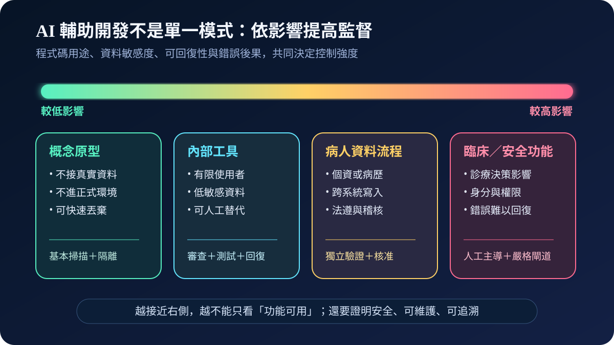
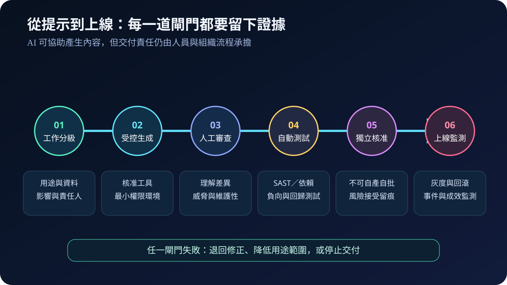
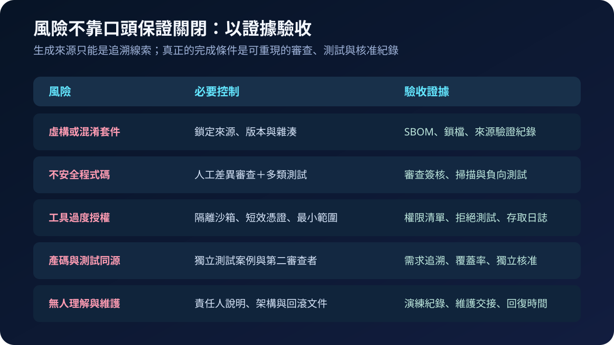

醫療資安國際觀察 · 2026-09-10
AI 輔助醫療軟體開發如何分級：從快速生成到交付證據
作者：Dr. William｜醫療資訊與資安治理實務工作者
AI 可加速原型、測試與程式碼產生，但「能執行」不等於「可安全交付」。當程式碼接觸病歷、身分權限、醫療設備或臨床決策，組織必須依影響提高人工理解、獨立測試、核准與回滾要求。
名詞解釋：AI 輔助開發與風險光譜
AI 輔助開發涵蓋自動完成、產生函式、修改模組，到 Agent 自主規劃架構與測試。英國 NCSC 以「vibe coding spectrum」說明自主程度不是二分法：概念原型可允許較高自動化；處理敏感資料、憑證、驗證授權或安全關鍵功能時，監督強度應明顯提高。SSDF則是 NIST 的安全軟體開發框架，用共同語言連結開發、採購與供應商責任。
國際現況與適用邊界
NCSC 於 2026 年 6 月 18 日指出，AI 產生的程式碼可能帶入既有弱點，也可能形成難以理解與維護的複雜程式碼；高影響用途需要審查、理解、弱點檢查及功能驗證。NIST SP 800-218 提供可整合到不同開發生命週期的安全實務；SP 800-218A 進一步補充生成式 AI 與模型開發情境，並涵蓋 AI 系統生產者及採購者。
法域與效力：NCSC 內容是英國官方資安建議；NIST SSDF 是美國自願性風險管理框架。兩者不是台灣醫療機構的直接法定義務，也不取代醫療器材、個資、病歷、軟體確效或院內變更管理要求。台灣機構可採用其分級與證據方法，再依系統用途、主管機關要求及契約確認必要控制。
規劃：先分級工作，不以工具名稱分級
每項 AI 輔助工作應記錄系統擁有者、資料類型、外部曝險、臨床影響、失敗可回復性及供應鏈依賴。低風險原型須與正式資料及環境隔離；正式內部工具至少納入版本控制、審查與回歸測試；涉及病人資料、身分、醫囑或設備控制者，應採獨立核准與既有高影響變更流程。驗收指標可包括未經審查合併率、依賴來源驗證率、負向測試完成率、高風險變更雙人核准率與回滾演練完成率。

實作：讓生成路徑進入既有安全開發流程
- 隔離生成環境：使用核准帳號與受控儲存庫，禁止將病歷、正式憑證及未公開程式碼送入未核准服務。
- 限制工具權限：以沙箱、短效憑證、唯讀預設與最小儲存庫範圍限制 Agent；正式部署權限保持分離。
- 要求人工理解：審查者需能解釋安全假設、資料流、例外處理與相依套件，不接受只因測試通過而合併。
- 建立獨立測試：執行 SAST、依賴與秘密掃描，加入授權繞過、錯誤輸入、失效模式及臨床回歸案例；測試需求不得完全由同一生成脈絡產生。
- 分批上線：以灰度、監測與可重現回滾降低衝擊；模型、提示策略、外掛或權限改變時重新評估。
風險：生產力指標可能掩蓋維護債
以產碼量或交付速度作為主要 KPI，可能鼓勵過度生成並壓縮審查。虛構套件、名稱相似套件、過度權限與被註解掉的安全檢查，未必由功能測試發現；若產碼與測試來自相同假設，也可能一起漏掉需求錯誤。緩解方式是保留需求追溯、人工差異審查、獨立負向案例、套件來源鎖定及上線後成效監測，並讓風險接受由具權責者留痕。

可執行清單
- AI 輔助工作是否依資料、臨床影響與可回復性分級？
- 高影響程式碼是否由能解釋其行為的人員審查並獨立核准？
- 生成工具是否無法直接取得正式憑證、部署權限與全組織儲存庫？
- 套件來源、版本、雜湊、SBOM 與弱點處置是否可追溯？
- 測試是否包含安全負向案例、臨床回歸、失效模式及回滾？
- 交付指標是否同時衡量缺陷、維護性、例外與復原，而非只看速度？
來源
- UK NCSC｜The 'vibe coding spectrum' approach to AI-assisted software development（發布：2026-06-18；查閱：2026-09-10）
- NIST｜SP 800-218 Secure Software Development Framework Version 1.1（發布：2022-02-03；查閱：2026-09-10）
- NIST｜SP 800-218A Secure Software Development Practices for Generative AI and Dual-Use Foundation Models（發布：2024-07-26；查閱：2026-09-10）
內容說明
本文依健康台灣深耕計畫相關治理內容整理，並參考 NCSC 與 NIST 公開資料，提出台灣醫療機構可採用的 AI 輔助開發分級、交付閘門與證據框架；不取代主管機關公告、法律意見、醫療器材要求、軟體確效或個別系統風險判定。